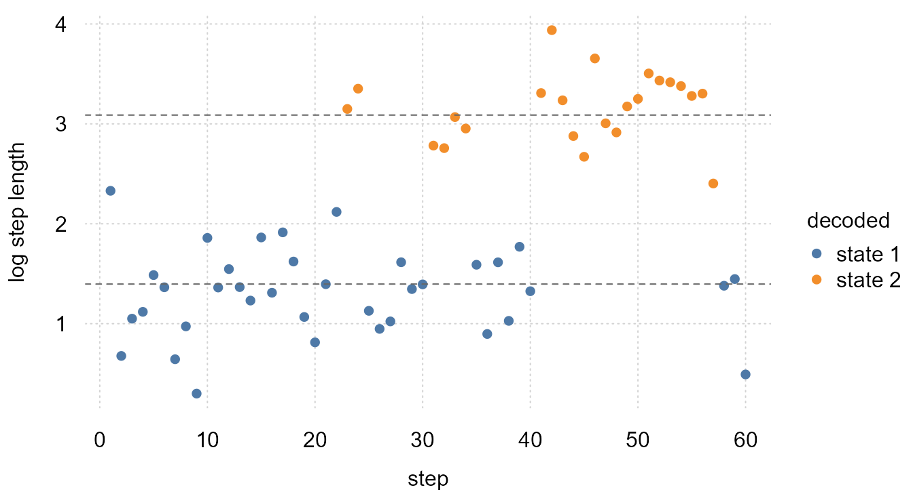

This package adds the two frmtmb families whose latent variable is a
discrete state. hmm(K, family) puts a Markov chain over the
rows of a sequence and sums the state path out exactly.
lca(K) puts one class on each subject and reads it through
conditionally independent items. Both are written against the
structured-family protocol that frmtmb exports, so the rest of the
grammar (priors, monotonic effects, hypothesis(), and the
addition terms each family accepts) applies to them unchanged.
The animal-track study below came from frmtmb’s own case-studies
vignette when hmm() moved out here. It checks the same
numbers against the same two reference packages, and the checks fail the
build if a number moves.
A hidden Markov model for an animal track
An animal alternates between behavioral modes. While it forages it
takes short, undirected steps; while it travels it takes long ones. The
mode is not observed, but it persists, so the movement package
literature models it as a Markov chain over the steps and the step
length as a state-dependent distribution (Michelot, Langrock and
Patterson 2016, Methods in Ecology and Evolution 7, the moveHMM
paper; Michelot 2022, the hmmTMB paper; Zucchini, MacDonald and Langrock
2016). hmm(K, family) writes that model as a family, so the
state sequence is summed out exactly by the forward algorithm and every
other part of the grammar still applies.
The simulated track below has 12 animals, 60 steps each, and two states with well separated log step lengths.
set.seed(2001)
G <- matrix(c(0.92, 0.08, 0.18, 0.82), 2, 2, byrow = TRUE)
one_track <- function(id, nt = 60L) {
s <- integer(nt); s[1] <- 1L
for (t in 2:nt) s[t] <- sample.int(2L, 1L, prob = G[s[t - 1L], ])
data.frame(track = id, step = seq_len(nt), state = s,
logstep = rnorm(nt, c(1.4, 3.1)[s], c(0.45, 0.55)[s]))
}
mv <- do.call(rbind, lapply(1:12, one_track))time = says which column orders the chain and
group = says which column cuts it into sequences. Both take
a bare name or a one-sided formula. init = "stationary"
gives the chain the stationary distribution of its own transition
matrix, which costs no parameters.
fhmm <- frm(bf(logstep ~ 1),
family = hmm(K = 2, gaussian(), time = step, group = track,
init = "stationary"),
data = mv)
e <- unlist(fixef(fhmm))
rbind(estimated = c(exp(e[["sigma1.(Intercept)"]]), e[["mu1.(Intercept)"]],
e[["mu2.(Intercept)"]], exp(e[["sigma2.(Intercept)"]])),
simulated = c(0.45, 1.4, 3.1, 0.55))[, c(2, 1, 3, 4)] |>
`colnames<-`(c("mean1", "sd1", "mean2", "sd2")) |> round(4)
#> mean1 sd1 mean2 sd2
#> estimated 1.3969 0.4503 3.0883 0.4785
#> simulated 1.4000 0.4500 3.1000 0.5500The transition matrix is a row-wise multinomial logit with state 1 as
the reference cell of every row, which is depmixS4’s convention. Turn
the two free logits tr12 and tr22 back into
probabilities by hand.
tpm_row <- function(z) { p <- exp(c(0, z)); p / sum(p) }
Ghat <- rbind(tpm_row(e[["tr12.(Intercept)"]]),
tpm_row(e[["tr22.(Intercept)"]]))
dimnames(Ghat) <- list(paste0("from", 1:2), paste0("to", 1:2))
round(Ghat, 4)
#> to1 to2
#> from1 0.9219 0.0781
#> from2 0.2070 0.7930
round(G, 4)
#> [,1] [,2]
#> [1,] 0.92 0.08
#> [2,] 0.18 0.82hmm_probs() gives the smoothed state probability of
every row from a forward-backward pass, and hmm_viterbi()
gives the most probable whole path. The two answer different questions:
the first is marginal per row, the second is joint over the
sequence.
c(occupancy_state1 = mean(hmm_probs(fhmm)[, 1]),
viterbi_accuracy = mean(hmm_viterbi(fhmm) == mv$state))
#> occupancy_state1 viterbi_accuracy
#> 0.7125368 0.9791667Cross-check against hmmTMB and depmixS4
The same model has two reference implementations. hmmTMB fits the stationary-start version, and depmixS4 fits the free-start version by expectation maximization. Fit each on the same track and compare the maximized log likelihood.
dh <- data.frame(ID = mv$track, step = mv$step, logstep = mv$logstep)
hid <- hmmTMB::MarkovChain$new(data = dh, n_states = 2,
initial_state = "stationary")
hid$update_tpm(matrix(c(0.9, 0.1, 0.1, 0.9), 2, 2, byrow = TRUE))
obs <- hmmTMB::Observation$new(
data = dh, n_states = 2, dists = list(logstep = "norm"),
par = list(logstep = list(mean = c(1.5, 3.0), sd = c(0.5, 0.5))))
hm <- hmmTMB::HMM$new(obs = obs, hid = hid)
hm$fit(silent = TRUE)
c(frmtmb = as.numeric(logLik(fhmm)), hmmTMB = hm$llk(),
difference = as.numeric(logLik(fhmm)) - hm$llk())
#> frmtmb hmmTMB difference
#> -6.858536e+02 -6.858536e+02 -5.921947e-10
stopifnot(abs(as.numeric(logLik(fhmm)) - hm$llk()) < 1e-6,
max(abs(sort(as.numeric(hm$par()$obspar["logstep.mean", , 1])) -
sort(c(e[["mu1.(Intercept)"]],
e[["mu2.(Intercept)"]])))) < 1e-4)hmmTMB starts from generic values rather than from the frmtmb answer, so this is a check of the optimum and not only of the likelihood.
depmixS4 leaves the initial distribution free, so compare it with
init = "estimated". Its expectation-maximization run is
multimodal, so take the best of several random starts.
fest <- frm(bf(logstep ~ 1),
family = hmm(K = 2, gaussian(), time = step, group = track,
init = "estimated"), data = mv)
dm <- depmixS4::depmix(logstep ~ 1, data = mv, nstates = 2,
ntimes = as.integer(table(mv$track)))
set.seed(3)
best <- -Inf
sink(nullfile()) # depmixS4 reports every EM run on stdout
for (i in 1:5) {
ff <- try(suppressMessages(depmixS4::fit(
dm, verbose = FALSE, emcontrol = depmixS4::em.control(
random.start = TRUE, tol = 1e-12, maxit = 5000))), silent = TRUE)
if (!inherits(ff, "try-error")) {
best <- max(best, as.numeric(depmixS4::logLik(ff)))
}
}
sink()
c(frmtmb = as.numeric(logLik(fest)), depmixS4 = best,
difference = as.numeric(logLik(fest)) - best)
#> frmtmb depmixS4 difference
#> -6.821394e+02 -6.821394e+02 -9.678115e-08
stopifnot(abs(as.numeric(logLik(fest)) - best) < 1e-6)The three packages agree on the maximum to better than 1e-6. The free start costs one parameter and buys about 3.7 log-likelihood points on 12 sequences, which is what a free start usually buys when the chain is sticky.
One track, drawn against time and colored by its decoded state, is the picture the model is for.
one <- mv[mv$track == 1, ]
one$decoded <- factor(hmm_viterbi(fhmm)[mv$track == 1],
labels = c("state 1", "state 2"))
tinyplot::tinyplot(logstep ~ step | decoded, data = one, type = "p",
pch = 16, theme = "clean2", xlab = "step",
ylab = "log step length")
abline(h = c(e[["mu1.(Intercept)"]], e[["mu2.(Intercept)"]]), lty = 2,
col = "gray40")
The colors come in runs. That persistence is the whole difference
between an HMM and the two-component growth mixture of
vignette("case-studies", package = "frmtmb"), and it is
what the transition matrix measures.
What the HMM surface refuses
The refusals below are documented rather than worked around. Each one has a reason that a workaround would hide.
conditional_effects(fhmm)
#> Error:
#> ! conditional_effects() is not available for an hmm() fit: the expected response weights the state means by posterior state occupancies, which depend on the observed responses of a whole sequence and are therefore undefined on the synthetic grid this function builds. Plot one state's own predictor from predict(dpar = "mu2"), or the occupancies from hmm_probs()
residuals(fhmm, type = "deviance")
#> Error:
#> ! residuals(type = "deviance") is not available for an hmm() fit: the unit deviance compares a row's likelihood with its saturated fit, and an HMM has no per-row likelihood to saturate. Use type = "response" or type = "pearson"conditional_effects() needs an expected response on a
synthetic covariate grid. Under an HMM the expected response weights the
state means by the posterior occupancies, and those depend on the
observed responses of a whole sequence, so they do not exist on a grid.
Plot one state’s own predictor with predict(dpar = "mu2"),
or the occupancies from hmm_probs().
residuals(type = "deviance"), and frmtmb.sample’s
log_lik() and loo(), all need a likelihood
that factors into one term per observation. An HMM’s smallest
independent unit is a sequence, so a per-observation column would be a
group and leaving one out would drop a whole track. Compare HMM fits
with AIC() or frm_bootstrap().
This section also does not cover the parts of the surface that do
work: transition covariates (trans = ~x, or
bf(y ~ 1, tr12 ~ x) for one cell), non-gaussian emissions,
and random effects inside a state’s linear predictor. The last one is
approximate: the Laplace approximation integrates the random effect
outside the exact state sum, and the integrand is a mixture over state
sequences rather than a gaussian. ?hmm gives the measured
size of that bias.
Latent class analysis of a rater panel
Seven raters each score the same slides. The scores disagree, and the
question is whether the disagreement has structure: is there a latent
grouping of slides that the raters are noisily reading? That is the
latent class model, and it is poLCA’s
carcinoma example in miniature.
lca(K) takes a matrix response whose columns are the
items. Each subject gets one class; within a class the items are
independent, and each item has its own class-conditional profile over
its categories.
set.seed(404)
ns <- 250L
truth <- rbinom(ns, 1L, 0.45) + 1L
# seven raters, each with its own sensitivity and specificity
sens <- c(0.93, 0.88, 0.80, 0.95, 0.72, 0.90, 0.85)
Y <- sapply(sens, function(p)
ifelse(truth == 2L, rbinom(ns, 1L, p), rbinom(ns, 1L, 1 - p)) + 1L)
colnames(Y) <- LETTERS[1:7]
dc <- data.frame(Y = I(Y))
head(Y, 3)
#> A B C D E F G
#> [1,] 2 2 1 2 2 2 2
#> [2,] 2 2 2 2 2 2 2
#> [3,] 1 1 1 1 1 1 1
flca <- frm(bf(Y ~ 1), family = lca(K = 2), data = dc)
flca
#> frmtmb fit: Y ~ 1
#> Family: lca(K = 2) Method: ML
#> logLik: -813.028 AIC: 1656.06 nobs: 250
#>
#> Fixed effects:
#> theta1:
#> (Intercept)
#> 0.01131The item profiles are what the classes mean. Each block is one rater: the rows are the classes and the columns are that rater’s categories, so the diagonal reads off the rater’s accuracy.
lca_profiles(flca)
#> <lca profiles> 2 classes, 7 items
#>
#> Estimated class sizes (mean prior probability):
#> class1 class2
#> 0.5028 0.4972
#>
#> A:
#> cat1 cat2
#> class1 0.9599 0.0401
#> class2 0.0349 0.9651
#>
#> B:
#> cat1 cat2
#> class1 0.8745 0.1255
#> class2 0.1614 0.8386
#>
#> C:
#> cat1 cat2
#> class1 0.7396 0.2604
#> class2 0.1773 0.8227
#>
#> D:
#> cat1 cat2
#> class1 0.9546 0.0454
#> class2 0.0321 0.9679
#>
#> E:
#> cat1 cat2
#> class1 0.6519 0.3481
#> class2 0.2820 0.7180
#>
#> F:
#> cat1 cat2
#> class1 0.9124 0.0876
#> class2 0.0829 0.9171
#>
#> G:
#> cat1 cat2
#> class1 0.8720 0.1280
#> class2 0.1479 0.8521lca_probs() gives each slide’s posterior class
membership, and its entropy attribute is the usual
separation statistic: 1 is a perfectly resolved partition, 0 is no
information about class at all.
pp <- lca_probs(flca)
head(round(pp, 3))
#> class1 class2
#> [1,] 0.000 1.000
#> [2,] 0.000 1.000
#> [3,] 1.000 0.000
#> [4,] 0.002 0.998
#> [5,] 1.000 0.000
#> [6,] 1.000 0.000
attr(pp, "entropy")
#> [1] 0.989173
# the classes are exchangeable, so score both labelings
max(mean(max.col(pp) == truth), mean(max.col(pp) == 3L - truth))
#> [1] 0.992Cross-check against poLCA
poLCA fits the same model by expectation maximization.
lca() maximizes the same likelihood by gradient ascent on
the same parameterization, so the two should reach the same optimum.
dp <- as.data.frame(Y)
set.seed(11)
pl <- poLCA::poLCA(cbind(A, B, C, D, E, F, G) ~ 1, dp, nclass = 2,
nrep = 20, verbose = FALSE, maxiter = 20000,
tol = 1e-12)
c(frmtmb = as.numeric(logLik(flca)), poLCA = pl$llik,
difference = as.numeric(logLik(flca)) - pl$llik)
#> frmtmb poLCA difference
#> -8.130282e+02 -8.130282e+02 -1.469857e-09
stopifnot(abs(as.numeric(logLik(flca)) - pl$llik) < 1e-6)The class labels may come out in either order, so match them before comparing the item profiles and the posterior memberships.
ours <- do.call(cbind, lca_profiles(flca))
theirs <- do.call(cbind, pl$probs)
perm <- if (sum(abs(ours - theirs)) <= sum(abs(ours[2:1, ] - theirs))) {
1:2
} else {
2:1
}
c(profiles = max(abs(ours[perm, ] - theirs)),
posterior = max(abs(lca_probs(flca)[, perm] - pl$posterior)))
#> profiles posterior
#> 6.922964e-07 4.450914e-06What the LCA surface refuses
The response is a matrix of nominal item codes, so there is no fitted mean and therefore no residual, and the gating predictor takes no random effects.
fitted(flca)
#> Error:
#> ! An lca() fit has no fitted mean: the response is a matrix of nominal item codes, so averaging them would average arbitrary labels. Use lca_probs() for posterior class membership and lca_profiles() for the item profiles
residuals(flca)
#> Error:
#> ! An lca() fit has no fitted mean: the response is a matrix of nominal item codes, so averaging them would average arbitrary labels. Use lca_probs() for posterior class membership and lca_profiles() for the item profilesLatent class REGRESSION needs no extra machinery. The
class-membership weights are ordinary distributional parameters, so a
covariate in the formula puts a multinomial logit on class membership,
and its coefficients get standard errors, priors and
hypothesis() like any other fixed effect.